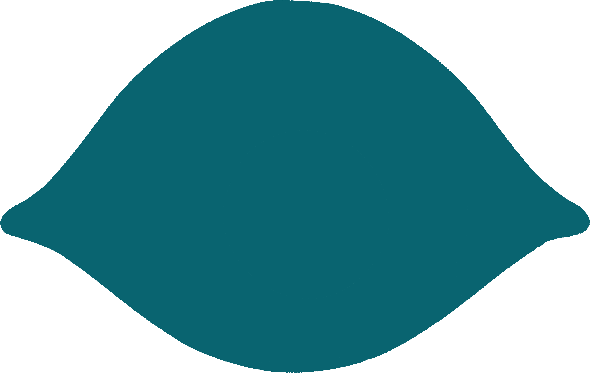
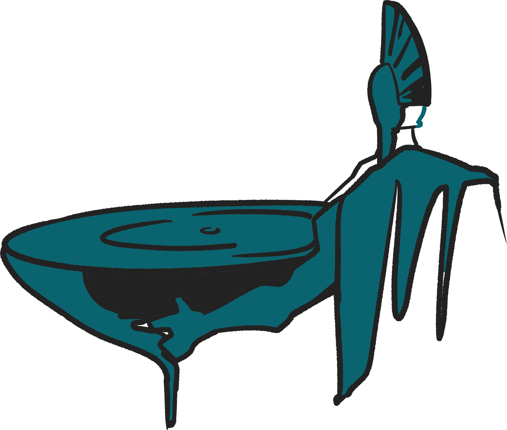

한 순간의 오만과 실수로 신의 분노를 산 오디세우스는
수많은 역경과 유혹을 이겨내고
자신의 집으로 돌아가고자 한다.

01
귀향 중 휴식을 위해 들린 한 섬에서 오디세우스 일행은 외눈박이 거인 폴리페무스의 동굴에 갇히게 된다. 거인은 동굴 문을 거대한 바위로 막고, 병사들을 차례로 잡아먹기 시작했다.
위기에 처한 오디세우스는 꾀를 내어
거인에게 독한 포도주를 대접했다. 기분이 좋아진 거인이 이름을 묻자, 꾀많은 오디세우스는 자신의 이름을
아무도(Nobody)라고
알려줬다.


술에 취한 거인이 깊은 잠에 빠지자, 오디세우스는 나무 말뚝을 불로 달군 뒤 거인의 외눈을 찔렀다.
눈이 찔려 장님이 된 폴리페무스가 비명을 지르자 동료 거인들은 동굴 앞으로 와 무슨 일이냐고 물었다. 하지만 폴리페무스는 “지금 아무도 나를 죽이려 하지 않는다!”라고 소리칠 뿐이었고, 동료 거인들은 별일 아니라 생각하며 돌아갔다. 그 틈을 타 오디세우스 일행은 동굴을 무사히 탈출했다.
하지만 오디세우스는 도망치면서 오만을 부려버렸다.
그는 외쳤다.
“외눈거인이여! 만일 필멸자들 중 누군가가 그대의 눈이
그토록 비참하게 먼 이유를 묻는다면, 도시를
파괴하는 자, 라에르테스의 아들, 이타카의 왕
오디세우스가 그대의 눈을 멀게 했다고 말하라!”

분노한 폴리페무스는 자신의 아버지에게 오디세우스를 저주해 달라 빌었는데 하필 그의 아버지는 바다의 신 포세이돈이었다.
아들의 모습에 격노한 포세이돈은 바다를 뒤엎었으니 이 사건을 계기로 오디세우스는 수십 년간 바다를 떠돌게 된다.
“
검은 머리의 신이자 대지를 흔드시는 포세이돈이시여, 내가 진정 당신의 아들이라면 오디세우스가 결코 고향 땅을 밟지 못하게 하소서. 만약 그가 고향에 돌아가는 것이 운명이라면, 모든 동료를 잃고 다른 이의 배를 탄 채 비참한 모습으로 아주 오랜 시간이 흐른 뒤에야 도착하게 하소서.
”
02

바다를 떠돌던 오디세우스 일행은 마녀 키르케의 아이아이에 섬에 도착한다. 그러나 선발대로 나선 부하들이 마녀가 준 포도주를 마시고 단체로 돼지가 되버리는 참사가 일어난다.
마녀가 음식에 기억을
지우는 독약을 타서 먹인 뒤,
돼지로 변신시켜 축사에
가둔 것이었다.

동료들을 구하기 위해 홀로 나선 오디세우스는 도중에 전령의 신 헤르메스를 만나게 된다. 이때 헤르메스는 그를 돕고자 마법을 원천 봉쇄하는 우유 빛깔 꽃의 신비한 약초 ‘몰리’를 전해줬다.

키르케는 오디세우스가 성에 당도하자 그를 맞이하며 똑같은 마법의 포도주를 권했다. 그 또한 홀릴 작정이었던 것이다. 하지만 오디세우스는 ‘몰리’ 약초 덕에 마법이 통하지 않았다. 오히려 오디세우스는 칼을 뽑아들어 그녀의 목을 겨누며 위협했다.

뜻밖의 상황에 당황한 키르케는 부하들을 다시 인간으로 돌려놓으며 오디세우스에게 사과했다.
아예 키르케는 그의 용모와 성품에 반해버려 연회를 열고 그와 동료들을 1년 동안 편안히 머물게 해주었다. 떠날 때가 되자 키르케는 그와의 이별에 슬퍼하면서도 안전한 귀향로를 찾기 위해 저승에 가서 눈먼 예언자 테이레시아스를 만나라는 조언을 건넨다.
“
당신은 누구시며 어디서 오신 분입니까? 당신의 도시와 부모는 어디 있습니까? 당신이 매혹되지 않다니 참으로 경이롭군요. 지금까지 이 마법을 견뎌낸 사람은 아무도 없었습니다. 과연 당신의 가슴 속에는 마법에 걸리지 않는 마음이 들어 있군요!
”
03

키르케의 안내로 저승에 간 오디세우스는 눈먼 예언자 티레시아스를 만난다. 예언자는 귀환할 수 있는 유일한 방법과 무서운 경고를 남겼다.

“태양신 헬리오스의 섬에 가거든 그가 기르는 소들을 절대로 해치지 마십시오. 만약 소를 건드린다면, 당신은 모든 동료를 잃고 홀로 비참하게 고향에 도착할 것입니다.”
예언자의 경고를 들은 오디세우스는 탄식을 내뱉으면서도, 담담하게 신탁을 받아들였다. 그는 앞으로의 불길한 미래로부터 부하들을 단단히 단속하리라 결심했다.
또한 오디세우스는 트로이 전쟁의 총사령관, 아가멤논의 혼령을 마주하고 크게 놀랐다. 전쟁에서 승리하고 당당하게 귀환했던 영웅은, 정작 집에 도착하자마자 아내와 그녀의 내연남에게 기습당해 비참하게 살해당했다. 배신감에 통곡하던 아가멤논은 오디세우스에게 충고를 건넸다.

“사람을 절대로 온전히 믿지 마시오. 고향에 들어갈 때도 정체를 숨긴 채 비밀리에 가시오. 사람은 더이상 믿을 수 없으니.”
오디세우스는 저승에서 얻은 씁쓸한 지혜들을 품에 안고 다시 산 자들의 세상으로 발길을 돌렸다.
“
죽음에 대해 내게 그럴싸하게 말하지 마시오, 고결한 오디세우스여! 나는 죽은 자들의 왕이 되어 군림하느니, 차라리 지상에서 영토도 없고 재산도 없는 가난한 농부 밑에서 품삯을 받는 머슴이 되고 싶소.
”
04
태양신 헬리오스의 섬에 도착한 오디세우스 일행. 그들은 한 달 동안 몰아친 거센 역풍 때문에 섬에 발이 묶이고 만다. 오디세우스는 예언자의 경고를 기억하고 헬리오스의 소들을 먹지 마라 지시했다.
하지만 그가 자리를 비운 사이 굶주림에 미쳐가던 부하들은 결국 소들을 도살해 먹어버렸다.

분노한 헬리오스는 제우스에게 이들을 처벌해달라 요구했다. 결국 오디세우스 일행이 출항하자마자 제우스가 벼락을 내리쳤다. 순식간에 배가 박살났고, 그들은 하염없이 거센 조류에 밀려갔다.
그리고 그들이 당도한 곳은 여섯 머리 괴물 스킬라와 소용돌이 카리브디스가 버티고 있는 지옥의 해협이었다.

부하들은 모두 거대한 소용돌이에 휩쓸리거나 스킬라의 이빨에 씹혀 참혹한 죽음을 맞이했다. 홀로 남은 오디세우스는 절벽에 위태롭게 자라난 무화과나무 가지를 필사적으로 붙잡고 허공에 매달렸다. 그는 공포와 절망 속에서 버텨야만 했다.
이윽고 거대한 소용돌이 속에서 박살난 배의 돛대와 판자조각이 다시 떠오르자, 오디세우스는 뛰어내려 그것을 붙잡았다. 그는 손바닥이 부르트도록 필사적으로 물을 저어 죽음의 해협을 간신히 빠져나왔다.
순식간에 부하도, 배도 모두 잃은 미아가 된 오디세우스는 망망대해를 표류하다가, 요정 칼립소가 사는 오기기아 섬에 도달하게 된다.
05

표류끝에 도착한 오기기아 섬. 얄궃게도 섬의 주인인 여신 칼립소는 오디세우스에게 반해 그를 남편으로 삼으려 했다.
때문에 그는 여신과 함께 편안한 하루하루를 보낼 수 있었지만 여신은 영원한 생명과 늙지 않는 젊음까지 약속하며 무려 7년 동안이나 그를 섬에 묶어 두었다.
오디세우스는 여신의 호의 속에서도 늘 마음을 붙이지 못한 채 온종일 해변에 홀로 앉아 고향과 가족 생각에 눈물을 흘렸다.
보다못한 제우스는 칼립소에게 "오디세우스를 고향으로 돌려보내라"고 명령했다. 그러자 칼립소는 반발하며 올림포스 신들의 내로남불을 비판하며 그를 보내주지 않으려 했다.
"당신들은 참으로 시기심이 많고 가혹하구려! 신들은 인간들과 바람을 잘만 피우면서, 내가 파선당해 죽어가던 인간을 구해 남편으로 삼으려 하니 이제 와서 빼앗아 가겠다는 말이오?"
하지만 아무리 그녀라도 제우스의 명령을 거스를 수는 없었다. 여신은 그에게 뗏목과 식량을 내어주며 고향으로 돌아가 가족과 재회하길 빌어주며 이별의 슬픔을 뒤로했다.
이후 또다시 폭풍을 만난 오디세우스는 스케리아 섬 해변에 비참한 몰골로 표류하게 된다. 그러나 선한 공주 나우시카와 우연히 만나 왕궁에 초대받는다.
궁전에서 털어놓은 방랑담에 깊은 감동을 받은 왕과 공주는 그에게 안전한 배편을 내어주었고, 마침내 오디세우스는 20년 만에 그토록 갈망하던 고향 이타카의 흙을 극적으로 밟게 되었다.